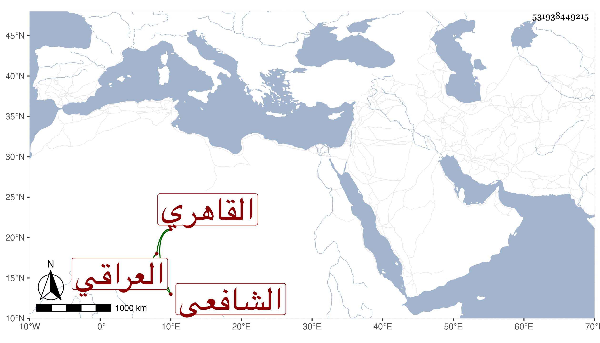

0902Sakhawi.DawLamic.ITO20230111-ara1.EIS1600.531938449215
Biography ID: 531938449215
363
عبد الوهاب بن أحمد بن عبد الرحيم بن الحسين التاج أبو الوفاء بن الولي أبي زرعة العراقي الأصل القاهري الشافعي ويعرف كأبيه بابن العراقي . ولد قبل القرن بكثير ونشأ في كنف أبيه وجده فحفظ القرآن وكتبا وعرض على جماعة وأسمعه أبوه على أبيه وغيره واشتغل وتميز بحيث استملى على والده أكثر مجالسه وناب في القضاء وأجاز له خلق من أماكن شتى في عدة استدعاءات ومات في حياة والده ضحى يوم الجمعة مستهل ربيع الأول سنة ثماني عشرة وصلى عليه قبيل عصره ودفن عند جده بجانب عمته خديجة تجاه تربة الطويل بالصحراء وترك أولادا وما رأيت شيخنا ولا غيره ممن وقفت عليه ترجمه فينظر رحمه الله وإيانا .
